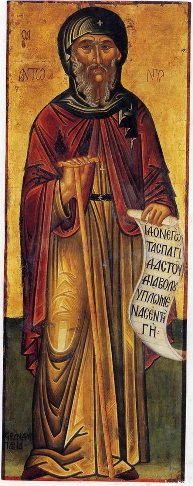
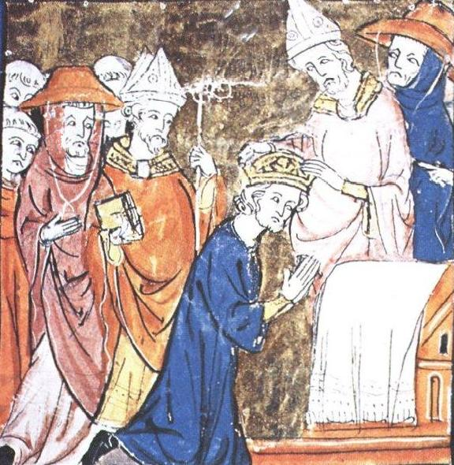
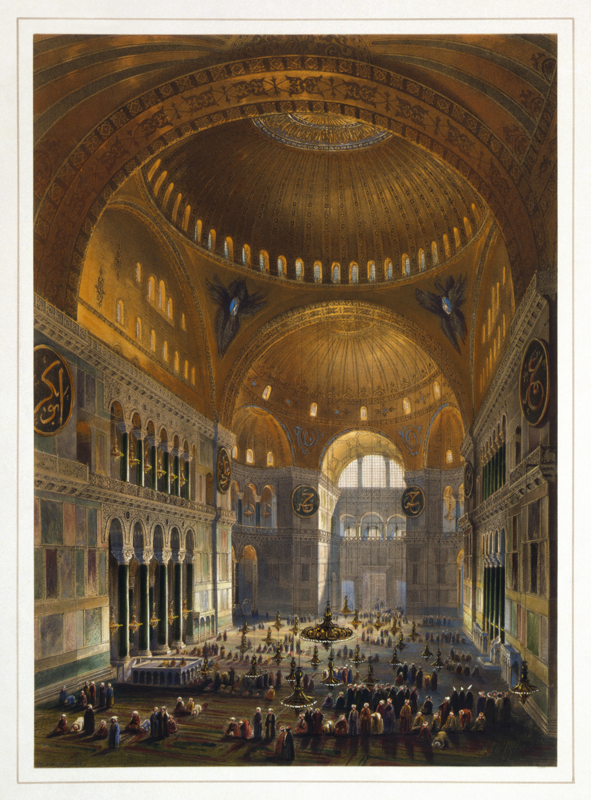

1. Εισαγωγή: Η Μεγάλη Φυγή στην Έρημο & το Ρήγμα της Ευρώπης
Στο ένατο μάθημα της μεγάλης ιστορικής της διαδρομής, η Μαρία Ευθυμίου εξετάζει δύο από τις πλέον καθοριστικές, αλληλένδετες διεργασίες που διαμόρφωσαν το μεσαιωνικό χριστιανικό σύμπαν: την έκρηξη του Μοναχισμού ως αυθόρμητης εσωτερικής επανάστασης απέναντι στην κοσμικοποίηση της Εκκλησίας, και την προοδευτική, αγεφύρωτη αποξένωση ανάμεσα στην Ανατολή (Κωνσταντινούπολη) και στη Δύση (Ρώμη), η οποία οδήγησε στη Στέψη του Καρλομάγνου και κορυφώθηκε στο τραγικό Μεγάλο Σχίσμα του 1054.
2. Οι Πατέρες της Ερήμου & το «Λευκό Μαρτύριο»
Μόλις ο Χριστιανισμός νομιμοποιήθηκε με το Διάταγμα των Μεδιολάνων (313 μ.Χ.) και ανήλθε στον αυτοκρατορικό θρόνο, μια τεράστια μάζα ανθρώπων αισθάνθηκε βαθιά πικρία. Οι επίσκοποι φορούσαν πλέον χρυσοποίκιλτα άμφια, συμμετείχαν στις κοσμικές δεξιώσεις των ανακτόρων και συναλλάσσονταν με πολιτικούς άρχοντες. Το ηρωικό πνεύμα των κατακομβών και των πρώτων μαρτύρων κινδύνευε να εκφυλιστεί σε αυλική γραφειοκρατία.
Η αντίδραση ήταν μια αυθόρμητη και ριζοσπαστική φυγή: η έξοδος στην έρημο. Αφού οι ρωμαϊκοί διωγμοί είχαν σταματήσει και δεν υπήρχε πια η δυνατότητα του «ερυθρού μαρτυρίου» (θάνατος στην αρένα από τα θηρία), γεννήθηκε το λεγόμενο «Λευκό Μαρτύριο» (Martyrium Album): η ισόβια, αδιάκοπη πάλη της συνείδησης ενάντια στα πάθη, την ύλη και τη ματαιότητα μέσα στην απόλυτη μοναξιά της αιγυπτιακής και συριακής ερήμου.

Οι Μορφές του Πρώιμου Μοναχισμού:
- Ο Ερημιτικός / Αναχωρητικός Βίος (Μέγας Αντώνιος): Ο ασκητής ζει απομονωμένος σε σπηλιές ή πρόχειρες καλύβες στη Θηβαΐδα, τρεφόμενος με λίγους χουρμάδες και νερό, αφιερωμένος στην αδιάλειπτη νοερά προσευχή.
- Ο Κοινοβιακός Μοναχισμός (Άγιος Παχώμιος): Στην Άνω Αίγυπτο (Ταβεννησία), ο Παχώμιος ίδρυσε τις πρώτες οργανωμένες αδελφότητες με κοινή τράπεζα, κοινή προσευχή, ομοιόμορφη ενδυμασία και αυστηρή υπακοή σε εκλεγμένο ηγούμενο.
- Οι Στυλίτες και οι Δενδρίτες: Στη Συρία, ο ασκητισμός έλαβε εκπληκτικές, υπεράνθρωπες μορφές. Ο Άγιος Συμεών ο Στυλίτης (390–459 μ.Χ.) έζησε 37 ολόκληρα χρόνια πάνω στην κορυφή ενός κίονα ύψους 15 μέτρων κοντά στο Χαλέπι, εκτεθειμένος σε καύσωνες και παγετούς! Οι μαθητές του ανέβαιναν με ξύλινες σκάλες για να του πάνε λίγο νερό και παξιμάδι. Το σώμα του είχε γεμίσει πληγές και έλκη από την ακινησία· η παράδοση μάλιστα αναφέρει ότι όταν ένα σκουλήκι έπεσε από μια πληγή του στο έδαφος, ο Συμεών το πήρε και το ξανάβαλε στη σάρκα του λέγοντας: «Φάγε ό,τι σου χάρισε ο Θεός!». Άλλοι ασκητές έζησαν μέσα σε κουφάλες δέντρων («δενδρίτες») ή περιπλανώνταν γυμνοί στα βουνά («βοσκοί»).
- Ο Κοινωνικός Μοναχισμός του Μεγάλου Βασιλείου: Στην Καισάρεια της Καππαδοκίας, ο Μέγας Βασίλειος συνέδεσε τον μοναχισμό με την εμπράγματη αγάπη. Ίδρυσε τη θρυλική Βασιλειάδα, μια ολόκληρη πολιτεία περίθαλψης με νοσοκομεία, λεπροκομεία, ορφανοτροφεία και πτωχοκομεία.
3. Ο Δυτικός Μοναχισμός: «Ora et Labora» και η Διάσωση της Παιδείας
Στη Δύση, μετά την κατάρρευση της Ρωμαϊκής Αυτοκρατορίας το 476 μ.Χ., ο Άγιος Βενέδικτος εκ Νουρσίας (480–547 μ.Χ.) ίδρυσε το 529 μ.Χ. τη θρυλική Μονή του Μόντε Κασίνο στην Ιταλία. Εκεί συνέταξε τον περίφημο Κανόνα του Αγίου Βενεδίκτου (Regula Benedicti), που σφράγισε την ταυτότητα της μεσαιωνικής Ευρώπης γύρω από το σύνθημα:
«Ora et Labora» (Προσεύχου και Εργάζου)
Τα βενεδικτινικά μοναστήρια δεν ήταν απλώς τόποι προσευχής, αλλά οι βασικές παραγωγικές και πολιτισμικές κυψέλες της κατακερματισμένης Ευρώπης:
- Οικονομική και Γεωργική Αναγέννηση: Οι μοναχοί αποξήραναν έλη, εκχέρσωσαν δάση, έχτισαν υδροκίνητους μύλους, καλλιέργησαν αμπέλια και τελειοποίησαν την οινοποιία και τη ζυθοποιία, επαναφέροντας τη σταθερότητα στην αγροτική οικονομία.
- Τα Scriptoria (Εργαστήρια Αντιγραφής): Στα μοναστηριακά scriptoria, υπό το τρεμάμενο φως των κεριών, εκατοντάδες μοναχοί αντέγραφαν με επιμέλεια πάνω σε περγαμηνές όχι μόνο τα εκκλησιαστικά κείμενα, αλλά και τα αριστουργήματα της κλασικής λατινικής γραμματείας (Κικέρωνα, Βιργίλιο, Οράτιο, Σενέκα, Τίτο Λίβιο). Χωρίς την άοκνη αυτή εργασία, ο κλασικός πολιτισμός θα είχε χαθεί οριστικά!
4. Η Άνοδος του Παπισμού: Από τον Επίσκοπο Ρώμης στον Κοσμικό Ηγεμόνα
Στην αρχαία Εκκλησία κυριαρχούσε το σύστημα της Πενταρχίας: πέντε ισότιμα Πατριαρχεία (Ρώμη, Κωνσταντινούπολη, Αλεξάνδρεια, Αντιόχεια, Ιεροσόλυμα). Ο Επίσκοπος Ρώμης διέθετε απλώς ένα «πρωτείο τιμής» (Primus inter pares = πρώτος μεταξύ ίσων), ως επίσκοπος της αρχαίας αυτοκρατορικής πρωτεύουσας και της έδρας του μαρτυρίου του Πέτρου και του Παύλου.
Όμως, το 476 μ.Χ. η Δυτική Ρωμαϊκή Αυτοκρατορία διαλύθηκε. Ενώ στην Κωνσταντινούπολη ο Αυτοκράτορας παρέμενε πανίσχυρος («Καισαροπαπισμός») και λειτουργούσε ένα πλήρες κράτος με νόμους, στρατό, δικαστήρια και τελωνεία, στη Δύση δεν υπήρχε πια κράτος!
Όπως παρατηρεί η Μαρία Ευθυμίου, η δυτική Ευρώπη μετατράπηκε σε ένα χαοτικό «τοπίο κινούμενης άμμου». Μέσα σε αυτό το απόλυτο κενό εξουσίας, το μοναδικό σταθερό σημείο αναφοράς για τον απλό άνθρωπο ήταν ο Επίσκοπος Ρώμης (Πάπας), ο οποίος υποχρεώθηκε εκ των πραγμάτων να επιστρατεύσει ανώτερη διπλωματία, να οργανώσει την άμυνα και να υποκαταστήσει τους απόντες κοσμικούς θεσμούς.
Πάπας Λέων Α΄ ο Μέγας (440–461 μ.Χ.): Το 452 μ.Χ., όταν ο φοβερός Αττίλας των Ούννων βάδιζε ακάθεκτος προς τη Ρώμη, ο Λέων βγήκε άοπλος στον ποταμό Μίντσιο και κατόρθωσε με το κύρος και την πειθώ του να αποτρέψει την καταστροφή της πόλης! Το 455 μ.Χ. διαπραγματεύτηκε με τους Βανδάλους του Γιζέριχου, περισώζοντας τις βασιλικές της Ρώμης.
Πάπας Γρηγόριος Α΄ ο Μέγας (590–604 μ.Χ.): Ανέλαβε κυριολεκτικά τη διακυβέρνηση της Ρώμης: οργάνωσε τη σίτιση, επισκεύασε τα ρωμαϊκά υδραγωγεία, μίσθωσε στρατιώτες για να αποκρούσει τους Λομβαρδούς, καθιέρωσε το Γρηγοριανό Μέλος και απέστειλε ιεραποστόλους στην Αγγλία.
Αυτή η ιστορική αναγκαιότητα γέννησε σταδιακά το δόγμα του απόλυτου Πρωτείου Εξουσίας (Plenitudo potestatis): η Ρώμη άρχισε να υποστηρίζει ότι ο Πάπας είναι ο μοναδικός διάδοχος του Αποστόλου Πέτρου και ορατός Αντιπρόσωπος του Χριστού επί της γης (Vicarius Christi), με άμεση δικαιοδοσία πάνω σε ολόκληρη την οικουμένη.
Όπως υπογραμμίζει η Μαρία Ευθυμίου στη διάλεξη, η δομική αυτή διαφορά καθόρισε ολόκληρη την εκκλησιαστική ιστορία: η Ανατολική Ορθοδοξία λειτούργησε διαχρονικά και λειτουργεί μέχρι σήμερα ως μια πολυκεντρική οικογένεια με πολλά ισότιμα Πατριαρχεία και ανεξάρτητες/αυτοκέφαλες Εκκλησίες (όπως η Ελλαδική, η Ρωσική από το 988 μ.Χ., κ.ά.). Αντίθετα, ο Δυτικός Καθολικισμός είναι αυστηρά μονοκεντρικός: έχει ένα και μοναδικό Πατριαρχείο, αυτό της Ρώμης, υπό την απόλυτη μοναρχία του Πάπα.
5. Η Συμμαχία με τους Φράγκους & η Στέψη του Καρλομάγνου (800 μ.Χ.)
Αισθανόμενος διαρκή πίεση από τους Λομβαρδούς και βλέποντας την Κωνσταντινούπολη αδύναμη ή αδιάφορη να παράσχει στρατιωτική προστασία στην Ιταλία, ο Παπισμός έκανε τη μεγάλη γεωπολιτική μεταστροφή: συμμάχησε με το ισχυρότερο γερμανικό βασίλειο της Δύσης, τους Φράγκους.
Για να θεμελιώσει νομικά την κοσμική του κυριαρχία στην κεντρική Ιταλία (τη δημιουργία των Παπικών Κρατών), το παπικό περιβάλλον κατασκεύασε στα μέσα του 8ου αιώνα ένα πλαστό αυτοκρατορικό διάταγμα: την Κωνσταντίνεια Δωρεά.
Σύμφωνα με αυτό, ο Μέγας Κωνσταντίνος δήθεν θεραπεύτηκε από λέπρα χάρη στις προσευχές του Πάπα Σιλβέστρου Α΄ και, ως ένδειξη ευγνωμοσύνης, του παραχώρησε όχι μόνο το παγκόσμιο πνευματικό πρωτείο, αλλά και την κοσμική εξουσία πάνω στη Ρώμη, την Ιταλία και όλες τις δυτικές επαρχίες!
(Την απάτη αυτή αποκάλυψε το 1440 ο Ιταλός ουμανιστής Λορέντσο Βάλλα, αποδεικνύοντας μέσω αυστηρής γλωσσολογικής κριτικής ότι το έγγραφο περιείχε λατινικούς όρους του 8ου αιώνα που ήταν εντελώς ανύπαρκτοι την εποχή του Κωνσταντίνου!).

Τα Χριστούγεννα του 800 μ.Χ., ο Πάπας Λέων Γ΄ έστεψε τον Καρλομάγνο Αυτοκράτορα. Στην Κωνσταντινούπολη, το γεγονός αυτό προκάλεσε οργή: υπήρχε μόνο μία νόμιμη Ρωμαϊκή Αυτοκρατορία, αυτή στον Βόσπορο! Όμως οι δυτικοί θεολόγοι βρήκαν ένα πρόσχημα: στο θρόνο της Κωνσταντινούπολης καθόταν τότε μια γυναίκα, η αυτοκράτειρα Ειρήνη η Αθηναία (η οποία είχε τυφλώσει τον γιο της Κωνσταντίνο ΣΤ΄ για να κυβερνήσει μόνη της), και κατά τη δυτική νομική αντίληψη μια γυναίκα δεν μπορούσε να είναι Imperator — άρα ο θρόνος ήταν «κενός»!
Η νέα αυτοκρατορία της Δύσης αναγνωρίστηκε αμέσως από την Ανατολή: ο μεγάλος Αββασίδης Χαλίφης της Βαγδάτης Χαρούν αλ-Ρασίντ (των Χιλίων και Μίας Νυχτών) έστειλε το 802 μ.Χ. επίσημη διπλωματική αποστολή στο Άαχεν, χαρίζοντας στον Καρλομάγνο ένα μηχανικό υδραυλικό ρολόι και έναν λευκό ασιατικό ελέφαντα με το όνομα Αμπούλ Αμπάς (Abul-Abbas), αφήνοντας άφωνη τη φραγκική αυλή που δεν είχε ξαναδεί ποτέ τέτοιο πλάσμα!
6. Η Κρίση της Εικονομαχίας (726–843 μ.Χ.): Θεολογία και Πολιτική Ρήξη
Ενώ η Δύση απομακρυνόταν, η Ανατολική Αυτοκρατορία συνταρασσόταν από έναν καταστροφικό εσωτερικό διχασμό: τη διαμάχη για τις ιερές εικόνες.
Το 726 μ.Χ., ο αυτοκράτορας Λέων Γ΄ ο Ίσαυρος, έχοντας μεγαλώσει στην ανατολική Μικρά Ασία και βλέποντας την ορμητική εξάπλωση του ανεικονικού Ισλάμ, θεώρησε ότι η υπερβολική προσκύνηση των εικόνων πλησίαζε την ειδωλολατρία. Όταν το ηφαίστειο της Σαντορίνης εξερράγη με τρομακτική βία, ο Λέων το ερμήνευσε ως θεϊκό σημάδι οργής και διέταξε να κατεβάσουν τη μεγάλη εικόνα του Χριστού από τη Χάλκινη Πύλη της Κωνσταντινούπολης, ξεκινώντας την πρώτη φάση των διώξεων.
Η κορυφαία θεολογική υπεράσπιση των εικόνων διατυπώθηκε από τον Άγιο Ιωάννη τον Δαμασκηνό (περ. 676–749 μ.Χ.), ο οποίος έγραφε ασφαλής μέσα στη Μονή του Αγίου Σάββα στην Παλαιστίνη, όντας υπήκοος του Αραβικού Χαλιφάτου και απρόσιτος από τις βυζαντινές αρχές!
Ο Δαμασκηνός εξήγησε: «Δεν προσκυνώ την ύλη, αλλά τον Δημιουργό της ύλης που έγινε ύλη για χάρη μου!». Εφόσον ο Υιός του Θεού έγινε αληθινός άνθρωπος με σάρκα και οστά (Ενανθρώπιση), η ύλη καθαγιάστηκε και ο Χριστός μπορεί να εικονιστεί.
Διατύπωσε τον κρίσιμο διαχωρισμό:
- Τιμητική Προσκύνηση: Απευθύνεται στην εικόνα, αλλά η τιμή διαβαίνει στο πρωτότυπο πρόσωπο (στον Χριστό ή στον Άγιο).
- Λατρεία: Αποδίδεται αποκλειστικά και μόνο στον Ένα Τριαδικό Θεό.
Η κρίση έληξε οριστικά το 843 μ.Χ., όταν η αυτοκράτειρα Θεοδώρα αναστήλωσε τις εικόνες (γεγονός που τιμάται ως η Κυριακή της Ορθοδοξίας). Ωστόσο, η παπική Ρώμη είχε καταδικάσει απερίφραστα την Εικονομαχία των Βυζαντινών, επιταχύνοντας ακόμα περισσότερο τη ρήξη της με την Ανατολή.
7. Το Μεγάλο Σχίσμα του 1054: Αναθέματα στην Αγία Σοφία
Στα μέσα του 11ου αιώνα, η χιλιετής κοινή πορεία των δύο χριστιανικών κόσμων έφτασε στο οριστικό της τέλος. Οι διαφορές είχαν συσσωρευτεί σε πολλαπλά επίπεδα:
- Το Πρωτείο του Πάπα (Plenitudo Potestatis): Η Ρώμη απαιτούσε απόλυτη μοναρχική υποταγή όλων των Εκκλησιών. Η Ανατολή υπερασπιζόταν τη Συνοδικότητα και την ισοτιμία των πέντε Πατριαρχείων.
- Το Filioque («και εκ του Υιού»): Η προσθήκη της φράσης αυτής στο Σύμβολο της Πίστεως από τη Δύση, που κατά την Ορθοδοξία αλλοίωνε τη δογματική ισορροπία της Αγίας Τριάδας εισάγοντας «δύο αρχές» στο Άγιο Πνεύμα.
- Τα Άζυμα: Η δυτική χρήση άζυμου ψωμιού στη Θεία Κοινωνία, που η Ανατολή θεωρούσε ιουδαϊκό κατάλοιπο, επιμένοντας στον ένζυμο άρτο ως σύμβολο της ζωντανής ανθρώπινης φύσης.
- Η Υποχρεωτική Αγαμία του Κλήρου: Η Δύση επέβαλε αυστηρή αγαμία σε όλους τους βαθμούς, ενώ η Ανατολή επέτρεπε στους έγγαμους κληρικούς να χειροτονούνται ιερείς.

Το καλοκαίρι του 1054, ο παπικός απεσταλμένος Καρδινάλιος Ουμβέρτος έφτασε στην Κωνσταντινούπολη για να συναντήσει τον Πατριάρχη Μιχαήλ Κηρουλάριο. Και οι δύο άνδρες ήταν αλαζόνες, υπερόπτες και ανίκανοι για συμβιβασμό. Ο Ουμβέρτος δεν μιλούσε ελληνικά, ενώ ο Κηρουλάριος αρνήθηκε να τον δεχθεί επισήμως.
Το πρωί του Σαββάτου, 16 Ιουλίου 1054, κατά τη διάρκεια της Θείας Λειτουργίας στην Αγία Σοφία, ο Ουμβέρτος και οι ακόλουθοί του προχώρησαν αγέρωχα στο ιερό βήμα και απέθεσαν πάνω στην Αγία Τράπεζα τη βούλα του αφορισμού και του αναθέματος!
Βγαίνοντας από τον ναό, ο Ουμβέρτος τίναξε τη σκόνη από τα σανδάλια του και φώναξε δυνατά στα λατινικά: «Videat Deus et judicet!» (Ας δει ο Θεός και ας κρίνει!). Ένας νεαρός υποδιάκονος έτρεξε πίσω του ικετεύοντάς τον να πάρει πίσω το έγγραφο, αλλά ο Ουμβέρτος το πέταξε με περιφρόνηση στο δρόμο. Στις 24 Ιουλίου, ο Κηρουλάριος συγκάλεσε Σύνοδο, έκαψε τη βούλα και αναθεμάτισε τους παπικούς λεγάτους.
Όπως εξηγεί η Μαρία Ευθυμίου, τέσσερις αιώνες μετά το Σχίσμα, υπό την ασφυκτική πίεση της οθωμανικής προέλασης, επιχειρήθηκε η επανένωση των Εκκλησιών στη Σύνοδο Φεράρας-Φλωρεντίας (1438–1439). Ο αυτοκράτορας Ιωάννης Η΄ Παλαιολόγος και οι ιεράρχες αποδέχθηκαν όλες τις παπικές αξιώσεις ελπίζοντας σε δυτική στρατιωτική βοήθεια — με μοναδική ηρωική εξαίρεση τον Μάρκο τον Ευγενικό που αρνήθηκε να υπογράψει. Παρότι η ένωση απορρίφθηκε με οργή από τον λαό στην Πόλη, η Ρώμη επινόησε έναν πρωτόγνωρο θεσμό: την Ουνία (Ουνίτες). Οι ουνιτικές εκκλησίες (που επιβιώνουν μέχρι σήμερα στην Ουκρανία, τη Ρωσία, τη Μέση Ανατολή αλλά και στην Αθήνα στα Πατήσια) διατηρούν πλήρως το ορθόδοξο βυζαντινό λειτουργικό τυπικό, τα άμφια, το τέμπλο και τη γλώσσα —τόσο που ο ανυποψίαστος πιστός δεν διακρίνει καμία διαφορά— αλλά υπάγονται απευθείας στο πρωτείο του Πάπα!
8. Το Ρεύμα του Κόλπου, η «Τρελή Ήπειρος» και η Κατάκτηση του Νέου Κόσμου (1492)
Στα τέλη του 15ου αιώνα, το 1492, την ώρα που η Ανατολική Εκκλησία έχει πλέον υποταχθεί στους Οθωμανούς, η Καθολική Ισπανία των βασιλέων Φερδινάνδου και Ισαβέλλας ανοίγεται στον ωκεανό με τον Γενοβέζο θαλασσοπόρο Χριστόφορο Κολόμβο. Είναι εντυπωσιακό —προσέξτε το αυτό— ότι οι ίδιες οι ιταλικές πόλεις δεν μπήκαν ποτέ στην εξερεύνηση του κόσμου· η επιτυχία τους στη Μεσόγειο ήταν τόσο τεράστια που τελικά παγιδεύτηκαν μέσα σε αυτήν! Οι μεγάλες δυνάμεις του Ατλαντικού (Ισπανία, Πορτογαλία, Αγγλία, Γαλλία, Ολλανδία) μίσθωναν ωστόσο Ιταλούς ναυτικούς στα δύσκολα, γιατί ήταν ξακουστοί στη θάλασσα.
Ο Κολόμβος φτάνει στην Καραϊβική (Αϊτή, Κούβα, Σάντο Ντομίνγκο) ακολουθώντας τα θαλάσσια ρεύματα που κινούνται δυτικά. Για να επιστρέψει όμως στην Ευρώπη, αναζητά ένα ρεύμα με αντίστροφη φορά και ανακαλύπτει στον Κόλπο του Μεξικού ένα από τα σπουδαιότερα γεωφυσικά φαινόμενα της Υδρογείου: το Ρεύμα του Κόλπου — αυτό που στα... «αρχαία ελληνικά» το λέμε Gulf Stream!
Πρόκειται για ένα γιγάντιο, θερμό ποτάμι μέσα στον Ατλαντικό Ωκεανό, με παροχή ύδατος πέντε φορές μεγαλύτερη από τον Αμαζόνιο! Κι όταν λέμε Αμαζόνιος, μιλάμε για μια κινούμενη θάλασσα που την εποχή των πολλών υδάτων η κοίτη του φτάνει τα 80 χιλιόμετρα πλάτος — απόσταση Αθήνα-Κόρινθος! (Θυμάμαι κάποτε σε ένα διεθνές συνέδριο στη Θεσσαλονίκη, γυρίζαμε με το πούλμαν μαζί με έναν ευγενέστατο Βραζιλιάνο σύνεδρο. Του έκανα λοιπόν την ξεναγό: «Να το Δίον, να ο Όλυμπος...», περνάμε κι από τα Τέμπη και του δείχνω με καμάρι: «This is the river Pinios!». Με κοιτάζει ο καημένος και του ξεφεύγει ένα: «River; Ποτάμι;» — με τσάκισε! Γι' αυτόν ο Πηνειός ήταν απλώς ένα αρδευτικό αυλάκι!)
Αυτό το θερμό Gulf Stream διασχίζει τον Ατλαντικό, «γλείφει» τις ακτές της Βόρειας Γαλλίας, της Ιρλανδίας και της Αγγλίας, και αλλάζει κυριολεκτικά το κλίμα της Ευρώπης. Αν κοιτάξετε τον χάρτη, το Λονδίνο και η Μόσχα βρίσκονται στο ίδιο περίπου γεωγραφικό πλάτος· κι όμως, η Αγγλία δεν έχει τους πάγους της Ρωσίας, αλλά ένα γλυκύτατο κλίμα με αδιάκοπη ποτιστική βροχή —«τακ, τακ, τακ» όλη μέρα, γι' αυτό και ο Άγγλος δεν αποχωρίζεται ποτέ την ομπρέλα του— που γεννά πλούσιο χορτάρι και κτηνοτροφία.
Η ήπειρος στην οποία αποβιβάζονται οι Ισπανοί Κονκισταδόρες (κατακτητές) είναι η πιο μακρόστενη και ακραία σε αντιθέσεις ήπειρος της Γης: ξεκινά από τους πάγους του Βόρειου Πόλου και φτάνει μέχρι την Ανταρκτική, διαθέτοντας όλα ανεξαιρέτως τα κλίματα του πλανήτη! Στον Βορρά, οι Μεγάλες Λίμνες και ο Νιαγάρας συγκεντρώνουν το 1/5 του γλυκού νερού όλης της Γης. Στον Νότο, η λεκάνη του Αμαζονίου αποτελεί το μεγαλύτερο τροπικό δάσος του πλανήτη, που μας δίνει το 20% του οξυγόνου μας (οι δύο στις δέκα αναπνοές μας έρχονται από εκεί — αν και σήμερα κόβουμε κάθε χρόνο έκταση ίση με την Ελβετία!). Κι όμως, δίπλα ακριβώς σε αυτή την «κόλαση νερού και πρασίνου», ανάμεσα στη Χιλή και το Περού, υψώνεται το τείχος των Άνδεων και απλώνεται η πιο στεγνή έρημος της Υδρογείου: η έρημος Ατακάμα. Αν στη Σαχάρα βρέχει μία φορά στα οκτώ χρόνια, στην Ατακάμα βρέχει μία φορά στα 140 χρόνια! Είναι μια «τρελή» ήπειρος, χωρίς μέτρο· γι' αυτό και μόνο αυτή μπορούσε να γεννήσει τη λογοτεχνία του μαγικού ρεαλισμού ενός Γκαμπριέλ Γκαρσία Μάρκες, όπου το όνειρο μπλέκεται αξεδιάλυτα με την πραγματικότητα.
Γεωργία χωρίς Άροτρο, Ανθρωποθυσίες και η «Σφαγή μιας Ηπείρου»
Όταν φτάνουν οι Ισπανοί γύρω στο 1500, η ήπειρος χωρίζεται σε δύο κόσμους: βορείως του Μεξικού είναι αραιοκατοικημένη από νομάδες κυνηγούς, αλλά από το Μεξικό και τη χερσόνησο του Γιουκατάν (την «Ακρόπολη» της αμερικανικής ηπείρου) προς τον Νότο σφύζει από πυκνοκατοικημένες αυτοκρατορίες. Η πρωτεύουσα των Αζτέκων, η Τενοτσιτλάν (η σημερινή Πόλη του Μεξικού), είναι τότε ίσως η μεγαλύτερη πόλη στον κόσμο! Οι πληθυσμοί αυτοί είχαν φτάσει στη Γεωργική Επανάσταση 3.000 χρόνια πριν, χωρίς όμως να διαθέτουν σίδηρο ή άροτρο· φύτευαν με ξύλινα ραβδιά, «τρύπα-σπόρος, τρύπα-σπόρος», και στις Άνδεις καλλιεργούσαν σε αναβαθμίδες (πεζούλες) μέχρι τα 4.000 μέτρα υψόμετρο!
Από αυτούς πήρε η ανθρωπότητα το καλαμπόκι (αραβόσιτο), την πατάτα (που την αγάπησαν οι Ευρωπαίοι περισσότερο κι από τους Αμερικανούς!), την ντομάτα, τα φασόλια, τις πιπεριές, το κακάο, τη βανίλια και τον καπνό, ενώ οι Ευρωπαίοι έφεραν στην Αμερική το βαμβάκι, το ζαχαροκάλαμο και τον αραβικό καφέ. Παράλληλα, σε περιοχές της Καραϊβικής και της Βραζιλίας, ο Φλωρεντινός εξερευνητής Αμέριγκο Βεσπούτσι (1502) καταγράφει έκπληκτος κοινωνίες απόλυτα κοινοκτημονικές: ανθρώπους γυμνούς, χωρίς ιδιοκτησία, χωρίς βασιλείς ή δικαστήρια, που ζουν κατά 500-600 άτομα σε τεράστιες καλύβες, κοιμούνται σε βαμβακερά δίχτυα (αιώρες) και δεν γνωρίζουν καν το ρήμα «έχω»!
Αντίθετα, στις αυτοκρατορίες των Αζτέκων (Μεξικό) και των Ίνκας (Περού), το κράτος είναι αυστηρά ιεραρχημένο και η θρησκεία απαιτεί καθημερινές ανθρωποθυσίες: για να ανατείλει ο Ήλιος κάθε πρωί, έπρεπε έξι ιερείς στην κορυφή των βαθμιδωτών πυραμίδων να σχίσουν με πέτρινο μαχαίρι (οψιδιανό) το στέρνο ενός ζωντανού αιχμαλώτου, να υψώσουν την παλλόμενη καρδιά του στον Ήλιο και έπειτα να κλωτσήσουν τη σορό στα ρηχά σκαλοπάτια της πυραμίδας, ώστε να μαλακώσει το κρέας καθώς κυλούσε προς τα κάτω για το τελετουργικό κανιβαλικό δείπνο! Ακριβώς αυτός ο τρόμος ώθησε τις υποτελείς φυλές να συμμαχήσουν με τους Ισπανούς των Ερνάν Κορτές και Φρανθίσκο Πιθάρο.
Όμως αυτό που διέπραξαν οι Ισπανοί κατακτητές —κατάφρακτοι στο σίδερο, με άλογα, πυρίτιδα και τα λάβαρα του «γλυκυτάτου Ιησού» και της Παναγίας— υπήρξε η μεγαλύτερη φρίκη στην ιστορία της ανθρωπότητας: για πρώτη φορά καταγράφηκε όχι η σφαγή μιας πόλης ή μιας χώρας, αλλά η σφαγή μιας ολόκληρης ηπείρου! Οι Ισπανοί, λέει με πικρή ειρωνεία η Μαρία Ευθυμίου, «έπαθαν κράμπα» στο χέρι από το πολύ σφάξιμο!
Ο Δομινικανός ιεραπόστολος Μπαρτολομέ ντε Λας Κάζας στέλνει συγκλονιστικές επιστολές στον Φερδινάνδο και την Ισαβέλλα, περιγράφοντας πώς οι στρατιώτες έβαζαν στοιχήματα ποιος θα ξεκοιλιάσει άνθρωπο με μία σπαθιά, έσπαγαν τα κεφάλια βρεφών στα βράχια και έστηναν χαμηλές αγχόνες όπου κρεμούσαν και έκαιγαν ζωντανούς τους ιθαγενείς ανά δεκατρείς — «προς τιμήν και δόξαν του Σωτήρα μας και των Δώδεκα Αποστόλων»! Στην Κούβα, ο τοπικός φύλαρχος (Κατσίκε) Χατουέι έδειξε στους συμπατριώτες του ένα πανέρι με χρυσά κοσμήματα λέγοντας: «Να ο Θεός των Χριστιανών! Ας τον ρίξουμε στο ποτάμι μήπως και γλιτώσουμε!». Όταν οι Ισπανοί τον συνέλαβαν και τον έδεσαν στον πάσσαλο για να τον κάψουν ζωντανό, ένας Φραγκισκανός μοναχός τού ζήτησε να βαπτιστεί την τελευταία στιγμή για να πάει στον Παράδεισο. Ο Χατουέι ρώτησε: «Στον Παράδεισο πηγαίνουν και οι Χριστιανοί;». «Βεβαίως, οι καλοί», απάντησε ο μοναχός. Κι ο Χατουέι αποκρίθηκε ακαριαία: «Τότε προτιμώ να πάω στην Κόλαση, για να μη βρίσκομαι μαζί με ανθρώπους τόσο σκληρούς!».
Βιολογικός Πόλεμος, ο Χρυσός της Σεβίλλης και η Ναυαρχίδα του Καθολικισμού
Μαζί με το σπαθί, τους ιθαγενείς θέρισε η γρίπη και η ευλογιά που έφεραν οι Ευρωπαίοι, ενώ οι κατακτητές —βιάζοντας τις ντόπιες γυναίκες— μετέφεραν πίσω στην Ευρώπη τη σύφιλη (είναι χαρακτηριστικό των ανθρώπινων επιδόσεων ότι στην Κίνα έφτασε πρώτα η σύφιλη και μετά το καλαμπόκι!).
Η τραγωδία των ιθαγενών υπήρξε το ότι διέθεταν άφθονο χρυσό και ασήμι. Επί δύο αιώνες τα ισπανικά γαλιόνια μετέφεραν αμύθητες ποσότητες χρυσού στην Ευρώπη (γεμίζοντας τον βυθό του Ατλαντικού με ναυάγια και τον καθεδρικό της Σεβίλλης με τέμπλο από μασίφ χρυσάφι!). Όμως —«μωραίνει Κύριος ον βούλεται απολέσαι»— ο χρυσός ήταν τόσος πολύς που έχασε την αξία του, προκαλώντας τον 16ο αιώνα τεράστια πληθωριστική κρίση και κατάρρευση των νομισμάτων στην Ευρώπη! Κι εδώ ήρθε η «εκδίκηση της γυφτιάς»: αυτό που ισορρόπησε την ευρωπαϊκή αγορά ήταν τελικά τα μπαχαρικά που έφερναν οι Πορτογάλοι από την Ασία!
Με τη Συνθήκη της Τορντεσίγιας (1494), ο Πάπας —καθώς Ισπανοί και Πορτογάλοι ήταν «καθολικοί μέχρι το κόκαλο, Πάπας ξερό ψωμί!»— χάραξε στα τυφλά μια γραμμή στον χάρτη, δίνοντας τη Βραζιλία στους Πορτογάλους (γι' αυτό και σήμερα στη Βραζιλία μιλούν πορτογαλικά!) και την υπόλοιπη Κεντρική και Νότια Αμερική στους Ισπανούς (συμπεριλαμβανομένων των νότιων πολιτειών των σημερινών ΗΠΑ —Καλιφόρνια, Τέξας, Νεβάδα— που ήταν έδαφος του Μεξικού μέχρι τον πόλεμο του 1846-1848, εξ ου και τα ισπανικά ονόματα Σαν Φρανσίσκο, Λος Άντζελες, Λας Βέγκας).
Έτσι γεννήθηκε η Λατινική Αμερική: μια ήπειρος που, μέσα από τον θρησκευτικό συγκρητισμό (καθώς η Καθολική Εκκλησία έξυπνα «έκανε τη χαζή», επιτρέποντας στους ιθαγενείς να ταυτίσουν τους παλιούς θεούς τους με χριστιανικούς αγίους), εξελίχθηκε στη μεγαλύτερη δεξαμενή πιστών του Καθολικισμού στον πλανήτη. Ό,τι είναι σήμερα η Ρωσία για την Ορθοδοξία, είναι η Λατινική Αμερική για τον Πάπα: πάνω από το μισό του 1,2 δισεκατομμυρίου των Καθολικών της Γης ζει εκεί!
9. Η Προτεσταντική Έκρηξη (1517): Ο Λούθηρος, οι Φούγκερ και τα «Κόκαλα των Αγίων»
Γύρω στο 1500, όλα μοιάζουν να πηγαίνουν περίφημα για τον Πάπα: έχει αποκτήσει μια ολόκληρη νέα ήπειρο, το χρυσάφι ρέει άφθονο στη Ρώμη και στον παπικό θρόνο κάθεται ο Ισπανός Αλέξανδρος ΣΤ΄ Βοργίας — ένας ικανότατος μεν πολιτικός, αλλά και «ασυγκράτητος εραστής» με αναγνωρισμένα εξώγαμα τέκνα, παρά την υποχρεωτική αγαμία του καθολικού κλήρου! Όμως, όπως έλεγαν οι αρχαίοι, την ώρα του μεγαλύτερου θριάμβου φωλιάζει ήδη από κάτω η ανατροπή.
Επί ενάμιση αιώνα, γενναίοι ιερωμένοι και πανεπιστημιακοί θεολόγοι μέσα στους κόλπους της ίδιας της Καθολικής Εκκλησίας χτυπούσαν καμπανάκια κινδύνου:
- Στην Αγγλία του 14ου αιώνα, ο Τζον Ουίκλιφ (John Wycliffe, †1384) και οι οπαδοί του, οι Λολάρδοι (Lollards), κήρυτταν την απόλυτη πενία του κλήρου και μετέφρασαν για πρώτη φορά τη Βίβλο στα λαϊκά αγγλικά.
- Στην Πράγα της Βοημίας, ο καθηγητής θεολογίας Γιαν Χους (Jan Hus) —ο οποίος όχι μόνο μετέφρασε τη Γραφή στα τσεχικά, αλλά επινόησε και το γραπτό τσεχικό αλφάβητο για να αποδώσει τους φθόγγους της γλώσσας του!— κλήθηκε στη Σύνοδο της Κωνστάντζας με εγγύηση ασφαλείας, αλλά μετά από επτά μήνες φρικτών βασανιστηρίων κάηκε ζωντανός το 1415 (και το 1416 κάηκε ο συνεργάτης του, Ιερώνυμος της Πράγας), πυροδοτώντας τους εικοσαετείς ηρωικούς Χουσιτικούς Πολέμους των Τσέχων αγροτών.
- Στη Φλωρεντία, ο μοναχός Τζιρόλαμο Σαβοναρόλα κατήγγειλε τη διαφθορά της Ρώμης και οδηγήθηκε κι αυτός στην πυρά (1498).
Το ποτήρι ξεχείλισε με το εμπόριο των συγχωροχαρτιών. Για να χρηματοδοτήσουν την ανέγερση της Βασιλικής του Αγίου Πέτρου στη Ρώμη, οι Πάπες τύπωναν προσυπογεγραμμένα χαρτιά άφεσης αμαρτιών —με κενό σημείο για να συμπληρώνεται το όνομα του πελάτη («Μαρία Ευθυμίου», ας πούμε!)— τα οποία πωλούσαν κάθε Κυριακή μετά τη λειτουργία σε διάφορες τιμές (άλλα με χρυσά γράμματα για τους πλούσιους, άλλα φθηνά για τους φτωχούς, για ζώντες και τεθνεώτες!). Όταν μάλιστα ο Γερμανός Αυγουστινιανός μοναχός και καθηγητής θεολογίας Μαρτίνος Λούθηρος (Martin Luther) ερεύνησε πού κατέληγαν αυτά τα τεράστια ποσά, ανακάλυψε με φρίκη ότι τα μισά χρήματα πήγαιναν στους Γερμανούς μεγαλοτραπεζίτες Φούγκερ (Fugger)! Γιατί; Διότι οι υποψήφιοι Πάπες δανείζονταν υπέρογκα ποσά από τους Φούγκερ για να εξαγοράσουν την εκλογή τους στον παπικό θρόνο και κατόπιν ξεχρέωναν τα δάνειά τους με τις εισπράξεις των συγχωροχαρτιών!
Το 1517, ο Λούθηρος λέει: «Τελείωσε το πανηγύρι! Εσύ κι εγώ στα μαρμαρένια αλώνια!». Συντάσσει τις 95 Θέσεις του και ένα κυριακάτικο πρωινό, πριν ακόμα ξημερώσει, τις θυροκολλά στον καθεδρικό ναό της Βιτεμβέργης. Η κοινωνία ήταν πλέον ώριμη: οι χωρικοί και οι αστοί αντιγράφουν τις θέσεις, τις κολλούν από χωριό σε χωριό και η Θρησκευτική Μεταρρύθμιση (Προτεσταντισμός / Διαμαρτυρόμενοι) καλπάζει σε όλη τη Βόρεια Γερμανία, τη Σκανδιναβία (Δανία, Σουηδία, Νορβηγία), τη Γαλλία (Λα Ροσέλ) και την Ελβετία, όπου δρουν παράλληλα ο γαλλόφωνος Ιωάννης Καλβίνος (Jean Calvin) στη Γενεύη και ο φωτισμένος Ούλριχ Ζβίγγλιος (Huldrych Zwingli) στη Ζυρίχη.
Οι Πυλώνες της Μεταρρύθμισης:
- «Κάθε άνθρωπος είναι ιερέας του εαυτού του»: Καταργείται η πνευματική διαμεσολάβηση του ιερατείου. Κάθε πιστός μπορεί μόνος του να διαβάσει και να κατανοήσει τη Βίβλο, η οποία μεταφράζεται πλέον στις εθνικές, δημοτικές γλώσσες των λαών.
- Απόρριψη Εικόνων, Αγίων και «Θαυματουργών Λειψάνων»: Οι Προτεστάντες καταργούν τις εικόνες, την επίκληση των Αγίων (οι προτεσταντικοί ναοί δεν φέρουν ονόματα αγίων) και εξαπολύουν πύρινους λόγους κατά της εμπορίας λειψάνων. «Για όνομα του Θεού!» βροντοφώναζε ο Λούθηρος, «έχουμε στην Ευρώπη δέκα κεφάλια του Αγίου Ιωάννη και τριάντα δύο χέρια του Αγίου Νικολάου! Τι ψέμα και τι μηχανισμός λεηλασίας των ψυχών είναι αυτός;».
- Κατάργηση του Μοναχισμού και δήμευση της εκκλησιαστικής περιουσίας: Τα μοναστήρια καταργούνται πλήρως ως εστίες πλούτου και διαφθοράς, και από τα επτά μυστήρια διατηρούνται ουσιαστικά μόνο το Βάπτισμα και η Θεία Ευχαριστία.
- Κοινωνική Αγιότητα (Social Holiness): Ο Θεός δεν ζητά ασκητική απομόνωση, αλλά έμπρακτη κοινωνική, φιλανθρωπική και παραγωγική δράση μέσα στην κοινωνία.
«Άβυσσος η ψυχή του ανθρώπου»: Ο Ηγεμόνας της Σαξονίας και οι Πυρές της Κυριακής
Σε αντίθεση με το Σχίσμα του 1054, που υπήρξε μια ρήξη κορυφής ανάμεσα σε Πατριάρχες και Πάπες, το Σχίσμα του 1517 ήταν ένα λαϊκό κίνημα που ανέβλυσε από τη βάση: από αγρότες, τεχνίτες και αστούς. Μαζί τους όμως συντάχθηκαν και ισχυροί Γερμανοί φεουδάρχες, όχι μόνο από θεολογική πεποίθηση, αλλά και επειδή εποφθαλμιούσαν τα τεράστια κτήματα της Καθολικής Εκκλησίας!
Και εδώ συναντούμε την απόλυτη ανθρώπινη σχιζοφρένεια — γιατί είναι «άβυσσος η ψυχή του ανθρώπου»: ο πιο θερμός προστάτης του Λούθηρου, ο άνθρωπος που τον έσωσε από βέβαιο θάνατο, ήταν ο Ηγεμόνας (Εκλέκτορας) της Σαξονίας! Κι όμως, ο ίδιος αυτός ηγεμόνας ήταν ταυτόχρονα ο μεγαλύτερος συλλέκτης ιερών λειψάνων στην Ευρώπη μετά τον Πάπα! Στο ανάκτορό του φύλαγε έναν θησαυρό 17.000 θαυματουργών αντικειμένων, ανάμεσα στα οποία: ένα κλαδί από τη Φλεγόμενη Βάτο του Μωυσή, ένα φιαλίδιο με γάλα από το στήθος της Παναγίας και —με το συμπάθιο!— ένα κομμάτι από την... πάνα του Ιησού!
Ακολούθησαν 150 χρόνια ανελέητων θρησκευτικών εμφυλίων πολέμων στην Κεντρική και Δυτική Ευρώπη (με αποκορύφωμα τη Νύχτα του Αγίου Βαρθολομαίου το 1572 στη Γαλλία). Στη Γαλλία και τη Γερμανία, το «υπερθέαμα της Κυριακής» ήταν ανατριχιαστικό: ξυπνούσες το πρωί, φορούσες τα καλά σου ρούχα, πήγαινες στην εκκλησία να ακούσεις τα γλυκύτατα λόγια του Ιησού, και βγαίνοντας στην πλατεία έβλεπες την πυρά όπου έκαιγαν ζωντανή μια οικογένεια Προτεσταντών! Ηρεμούσε η ψυχή σου και γύριζες ευχαριστημένος στο σπίτι για το κυριακάτικο μεσημεριανό σου!
10. Η Αγγλική Ιδιαιτερότητα: Ο Ερρίκος Η΄, η Ελισάβετ Α΄ και η Στροφή στη Θάλασσα (1534–1588)
Παραδόξως, η πρώτη χώρα στον κόσμο που πέρασε επίσημα και σχεδόν αναίμακτα στη Μεταρρύθμιση το 1534 ήταν η Αγγλία. Μετά την ήττα της στον Εκατονταετή Πόλεμο από τη Γαλλία (1453) και τον τριακονταετή εμφύλιο «Πόλεμο των Δύο Ρόδων» (μεταξύ των οίκων Λάνκαστερ και Γιορκ), στον αγγλικό θρόνο ανέβηκε η δυναστεία των Τυδώρ και ο βασιλιάς Ερρίκος Η΄ (Henry VIII).
Ο Ερρίκος Η΄ ήταν καθολικός, αλλά είχε ένα μεγάλο «χούι»: ήταν ασυγκράτητος γυναικάς! Για λόγους διπλωματίας είχε παντρευτεί την Ισπανίδα πριγκίπισσα Αικατερίνη της Αραγωνίας, κόρη της πανίσχυρης Ισπανίας, αλλά ερωτεύτηκε παράφορα την κυρία επί των τιμών Άννα Μπολέιν (η οποία ήταν ήδη προτεστάντισσα). Ζήτησε λοιπόν από τον Πάπα διαζύγιο. Στον Καθολικισμό όμως διαζύγιο δεν υπάρχει, διότι ο γάμος είναι Μυστήριο: δεν μπορείς να πεις στο Άγιο Πνεύμα, «Ξέρεις, Άγιο Πνεύμα μου, έκανα λάθος, καλός ήταν ο Κώστας αλλά τώρα θέλω τον Δημήτρη!». Οι Πάπες βέβαια είχαν εφεύρει μια «πατέντα» για τους βασιλείς: ανακάλυπταν εκ των υστέρων μια τυπική παρατυπία στην τελετή, έλεγαν ότι «δεν ήρθε τελικά το Άγιο Πνεύμα» και κήρυτταν τον γάμο ως μη γενόμενο! Όμως εδώ ο Πάπας βρέθηκε σε αδιέξοδο: από τη μια ήξερε ότι ο Ερρίκος θα του ζητούσε ακύρωση «κάθε δεκαπέντε μέρες», κι από την άλλη δεν τολμούσε να προσβάλει την υπερδύναμη της Ισπανίας. Έτσι είπε στον Ερρίκο: «Όχι!».
Και ο Ερρίκος Η΄, άνθρωπος εξαιρετικά πρακτικός, απάντησε το 1534: «Έτσι είσαι; Η Αγγλία αποκόπτεται από τη Ρώμη!». Ιδρύει την Αγγλικανική Εκκλησία, με πνευματική κεφαλή τον Αρχιεπίσκοπο του Καντέρμπερι και πολιτική κεφαλή τον ίδιο τον εκάστοτε Βασιλιά της Αγγλίας! (Γι' αυτό και στη σύγχρονη εποχή υπήρξε τεράστια αναστάτωση στο βρετανικό στέμμα όταν ο Κάρολος παραδέχθηκε δημόσια ότι εμοίχευσε με την Καμίλα όσο ζούσε η Νταϊάνα, καθώς ο αρχηγός της Αγγλικανικής Εκκλησίας απαγορεύεται να έχει υποπέσει στο αμάρτημα της μοιχείας — κι όλοι εύχονταν να κρατήσει η έρμη η Ελισάβετ Β΄ μέχρι να μεγαλώσει ο Ουίλιαμ!). Ο Ερρίκος Η΄ χώρισε μόνος του την Αικατερίνη, παντρεύτηκε την Άννα Μπολέιν (μέχρι που της έκοψε το κεφάλι για να πάρει την επόμενη!) και έκλεισε ακαριαία όλα τα μοναστήρια της Αγγλίας, δημεύοντας και εκποιώντας την τεράστια γη τους!
Ελισάβετ Α΄: «Μέγα το της Θαλάσσης Κράτος» (1588)
Μετά τον σύντομο θρόνο της καθολικής κόρης του Μαρίας, βασίλισσα της Αγγλίας γίνεται η κόρη του Ερρίκου Η΄ και της Άννας Μπολέιν: η Ελισάβετ Α΄ — μια γυναίκα που συμπύκνωνε τις αρετές «δέκα αρρένων τέκνων» και έθεσε τα θεμέλια της βρετανικής αυτοκρατορίας!
Διαθέτοντας το αγγλικό χάρισμα του μέτρου και του ρεαλισμού, η Ελισάβετ Α΄ καλεί τους σπουδαίους θαλασσοπόρους συμβούλους της, με πρώτο τον Σερ Φράνσις Ντρέικ (Sir Francis Drake), και τους ρωτά: «Η Αγγλία είναι μια μικρή, δευτερεύουσα χώρα απέναντι στο μεγαθήριο της Ισπανίας. Τι πρέπει να κάνω;». Και οι ναυτικοί της απαντούν με τη φράση των αρχαίων Ελλήνων: «Μέγα το της θαλάσσης κράτος, Βασίλισσά μου!». Οι μικρές χώρες γίνονται μεγάλες μόνο με το ναυτικό και το υπερπόντιο εμπόριο!
Όμως πώς θα έβγαιναν τα κεφάλαια των Άγγλων αριστοκρατών από τα σεντούκια τους, όταν στη μεσαιωνική νοοτροπία της Ευρώπης η επένδυση στο εμπόριο και την εργασία θεωρούνταν ταπεινωτική για έναν ευγενή; Η Ελισάβετ Α΄ βρίσκει τη μεγαλοφυή λύση: επενδύει επιδεικτικά τα δικά της βασιλικά χρήματα στα ναυπηγεία και στα καράβια! Αφού το κάνει η Βασίλισσα, η επένδυση στη θάλασσα γίνεται πλέον «σικ» (chic) — γίνεται τιμή και μόδα για όλη την αγγλική αριστοκρατία!
Έτσι, όταν το 1588 η πανίσχυρη Καθολική Ισπανία στέλνει την περίφημη Ισπανική Αρμάδα για να συντρίψει την προτεσταντική Αγγλία, η Ελισάβετ Α΄ εμψυχώνει η ίδια «ξεμαλλιασμένη» τους ναυτικούς της στις ακτές, και ο αγγλικός στόλος πετυχαίνει το αδιανόητο: βυθίζει την Ισπανική Αρμάδα! Το 1588 αλλάζει ο ρους της παγκόσμιας ιστορίας: η σκυτάλη της παγκόσμιας κυριαρχίας περνά από τον καθολικό Νότο στον προτεσταντικό Βορρά.
11. Ετυμολογικό Εργαστήρι: Οι Λέξεις της Διαίρεσης
- Μοναχός: Από το επίθετο μόνος. Εκείνος που απομονώνεται από την κοινωνία για να αφιερωθεί αποκλειστικά στον Θεό.
- Ασκητής: Από το ρήμα ἀσκέω-ῶ (γυμνάζομαι, κοπιάζω συστηματικά). Στην αρχαιότητα σήμαινε τον αθλητή των Ολυμπιακών Αγώνων. Στην Εκκλησία έγινε ο «αθλητής της πνευματικής πάλης».
- Κοινόβιον: Από το κοινός + βίος (κοινή ζωή). Κοινότητα με κοινό φαγητό, εργασία και προσευχή.
- Πάπας: Από το ελληνικό πάπας / παππάς (στοργικός πατέρας). Τίτλος στοργής που δινόταν αρχικά σε όλους τους επισκόπους. Στη Δύση περιορίστηκε αποκλειστικά στον Επίσκοπο Ρώμης.
- Εικονοκλασία: Από το εικών + κλάω-κλῶ (σπάζω, θρυμματίζω). Η καταστροφή των ιερών εικόνων.
- Σχίσμα: Από το ρήμα σχίζω (κόβω, διαχωρίζω με βία).
- Filioque: Λατινικά: filius (υιός) + εγκλιτικό -que (και). Σημαίνει «και εκ του Υιού».
- Ανάθεμα: Αρχικά σήμαινε το αφιέρωμα στο ναό (ἀνάθημα). Στην εκκλησιαστική γλώσσα έγινε η κατάρα: αυτός που αποκόπτεται οριστικά από το σώμα των πιστών και παραδίδεται στην κρίση του Θεού.
- Ουνία: Από το λατινικό unio (ένωση). Ο θεσμός της υπαγωγής στον Πάπα με διατήρηση του ανατολικού λειτουργικού τυπικού.
- Κονκισταδόρες (Conquistadores): Από το ισπανικό ρήμα conquistar (κατακτώ), εκ του λατινικού conquirere (αναζητώ, κατακτώ). Οι Ισπανοί ένοπλοι κατακτητές του Νέου Κόσμου.
- Προτεστάντες: Από το λατινικό protestari (δηλώνω δημόσια, διαμαρτύρομαι). Οι οπαδοί της Μεταρρύθμισης που διαμαρτυρήθηκαν κατά των παπικών αυθαιρεσιών.